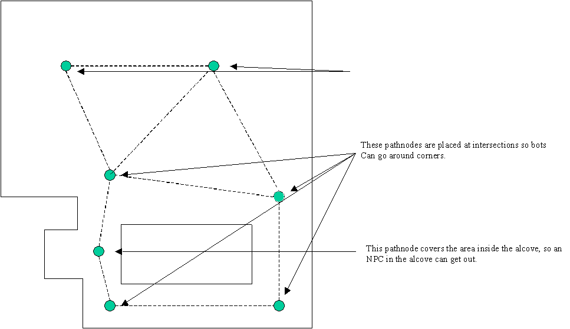

UDN
Search public documentation:
UsingWaypoints
日本語訳
中国翻译
한국어
Interested in the Unreal Engine?
Visit the Unreal Technology site.
Looking for jobs and company info?
Check out the Epic games site.
Questions about support via UDN?
Contact the UDN Staff
中国翻译
한국어
Interested in the Unreal Engine?
Visit the Unreal Technology site.
Looking for jobs and company info?
Check out the Epic games site.
Questions about support via UDN?
Contact the UDN Staff
UE3 Home > AI & Navigation > Using Waypoints
Using Waypoints
Overview
Basic Pathing
PathNodes (a subclass of NavigationPoint) in their levels on surfaces which NPCs can walk on, or in volumes which NPCs can swim in. PlayerStarts are also NavigationPoints, and they perform the same navigation function. In addition, InventorySpots are automatically placed at the location of every pickup in the level when building paths (they are invisible, but you will be able to see path connections to them).
For PathNodes to connect, they should be less than 1200 Unreal units apart (programmers can modify MAXPATHDIST in nPath.h to change this value). Having two NavigationPoints too close together (overlapping) can cause AI navigation problems and should be avoided. When placing PathNodes, the goal is to make sure that every area of the level is covered by a PathNode or some other NavigationPoint. An area is covered if an NPC could walk to some PathNode less than 1200 units away completely unobstructed (i.e. without having to step around anything).

Building Paths
PathNodes, the level designer can build the connections between NavigationPoints by selecting AI Paths from the Build menu (or by doing a full rebuild by selecting Rebuild All from the Build menu). The range of character sizes for which paths are built are determined by the PathSizes array of the Scout class being used to build paths (defined by the ScoutClassName ini entry in the [Engine.Engine] section of your Engine.ini file).
Once a level has a large number of paths, it can take a while to rebuild all the paths. To tweak path placement, use the Build Changed Paths button in the Build Options menu. This will only rebuild paths between NavigationPoints which have been added, removed, or moved. Before saving and playing the level, however, a full path rebuild is required.
Viewing Built Paths
Once paths have been built, they can be seen in the various level view windows by using the Show Paths option flag, which can be found on the Toggle Show Flags menu in any viewport. Paths will be displayed as lines from oneNavigationPoint to another. If NPCs can traverse the path in either direction, there will be two lines, with an arrowhead pointing in each direction. Otherwise, the line will show with an arrowhead in which direction the path can be traversed.
Even if the NPCs using the paths are small, it is always better to tweak the PathNode positions to make the connecting paths as wide as possible. NPCs will smoothly round corners, or strafe back and forth within a path, so larger paths will result in more natural looking movement.
Path Coloring
Once built, paths will be displayed in various colors, indicating important information about the path. The default path coloring of the navigation graph edges is defined as follows:- Orange - Flying path, narrow
- Light Orange - Flying path, wide
- Light Purple - requires high jump (higher than normal jump capability)
- Blue - narrow path
- Green - normal width
- White - wide path
- Pink - very wide path
- Yellow - forced path
- Purple - "advanced" path (requires "intelligence" to be used)
- Red - "one-way" path (i.e. there is a reachspec going from node A->B but not B->A) (NOTE: in recent builds it was changed to red-dashed to make one way situations easier to spot.)
Debugging Paths
-
Viewclass Pawn- to view the AI NPC in question. -
ShowDebug- to see what the AI NPC is thinking and the path it is following. -
RememberSpot- to mark a location when check navigation paths while in the level. Then, usingShowDebug(without viewing something else) will show you a continually updated path to the marked location.
Advanced Pathing
Doors
Door NavigationPoints should be placed in conjunction with any Mover that acts as a door (based on its position, it allows or blocks movement between two areas). The Door should be placed in the center of the affected area (typically, in the middle of the actual static mesh used for the door - but low enough to touch the ground). There are also several important properties of a Door NavigationPoint that should be updated as needed:
- DoorTag - the tag of the
Moverwith which thisDooris associated. - DoorTrigger - if the
Dooris triggered, this is the tag of the trigger actor which will open theDoor. - bInitiallyClosed - whether the default state of the
Moverallows movement (if false), or prevents it (if true, the default value). - bBlockedWhenClosed - if the
Moveris closed, there is no way for the NPC to open it (false by default).
Movers now have the bAutoDoor property. If set to true, a Door PathNode is automatically generated for that Mover. This should work for most Doors.
JumpPads
JumpPads will throw any Pawn touching them in a specified direction. JumpPads are set up by specifying a destination PathNode in the first entry of the ForcedPaths[] array property of the JumpPad. The appropriate jump velocity is automatically calculated when paths are rebuilt. The JumpModifier vector property of the JumpPad can be set if for any reason the automatically generated velocity is problematic.
JumpDests
JumpDests should be used instead of PathNodes at any spot that is too high to jump up to, but is linked to paths below it. JumpSpots will be used by NPCs in low gravity, or if they have some kind of jump boost. The path from which the bot should jump to the JumpSpot should have the JumpSpot in one of its ForcedPath[] array property entries.
Lifts
AMover used as a lift should never use the BumpOpenTimed state (use StandOpenTimed instead). Movers used as Lifts have two types of NavigationPoints associated with them. A LiftCenter should be placed on the lift at its center. A LiftExit should be placed at each exit from the Lift (but far enough away so that an NPC standing there will not interfere with the Lift). Both the LiftCenter and LiftExits have a LiftTag property which must be set to the tag of the Mover. In addition, if the lift is triggered, put the tag of the triggering actor in the LiftTrigger property of the LiftCenter. LiftExits also have an optional property, SuggestedKeyFrame, which can be set to the keyframe number of the mover when the LiftExit can be used. This may improve navigation by NPCs in some situations.
Ladders
LadderVolumes must be oriented to face the wall being climbed (by adjusting their WallDir property, which is displayed as a directional arrow when the LadderVolume is selected). In most cases, level designers can allow Ladder NavigationPoints to be automatically added when paths are built, at the top and bottom of the LadderVolume. However, if there are any problems with the automatically placed Ladders, level designers can manually place the Ladders after setting the LadderVolume bAutoPath property to false. The Ladder centers must be within the LadderVolume. The LadderVolume should touch the floor at its bottom, and poke over the edge at the top by at least the height of the largest NPC using the Ladder.
VolumePathNode
VolumePathNodes are useful for supporting navigation through a volume, for example when swimming or flying. A VolumePathNode's collision cylinder describes a navigable volume. During path building, the collision cylinder size is adjusted from the initial radius and height specified by the level designer (using the StartingRadius and StartingHeight properties) until an obstruction is reached. It's worthwhile to adjust the position (starting from about at the mid point of the navigable region) and the starting cylinder size of the VolumePathNode to achieve best results. VolumePathNodes will connect to other overlapping VolumePathNodes, as well as NavigationPoints within their volume. In addition, NavigationPoints directly below the VolumePathNode cylinder will also be tested for connectivity during path building. UTGame vehicle levels, such as VCTF-Sandstorm, demonstrate the use of VolumePathNodes.Cover Links
CoverLinks were developed for Gears of War. The following settings are used: - bCircular = check this to make circular cover, ie cover around a cylinder. Usually done with two cover nodes located on either side of the cylinder, turned to point at each other.
- bClaimAllSlots = if an AI gets in cover here, no other AI will attempt to take cover at this spot.
- MaxFireLinkDist = the max distance at which the cover slots will query other cover slots in order to create AI fire links between them (tells the Gears AI where they can shoot while in cover there).
- bCanPopUp = shows the designer if the slot thinks an actor should be able to stand up and shoot from here.
- bAllowPopUp = set this flag if you want actors to be able to stand up and shoot from here.
- bAllowMantle = set this flag if you want actors to be able to climb over this cover.
- bAllowCoverslip = set this flag if you want actors to be able to slip around this cover (only works on edges).
- bAllowSwatTurn = set this flag if you want actors to be able to perform a swat turn to or from this piece of cover (again only works on edges).
Modifying Path Sizes (for Programmers)
PathSizes array in your Scout class. Here is the default value:
PathSizes(0)=(Desc=Human,Radius=48,Height=80)
PathSizes(1)=(Desc=Common,Radius=72,Height=100)
PathSizes(2)=(Desc=Max,Radius=120,Height=120)
PathSizes(3)=(Desc=Vehicle,Radius=260,Height=120)